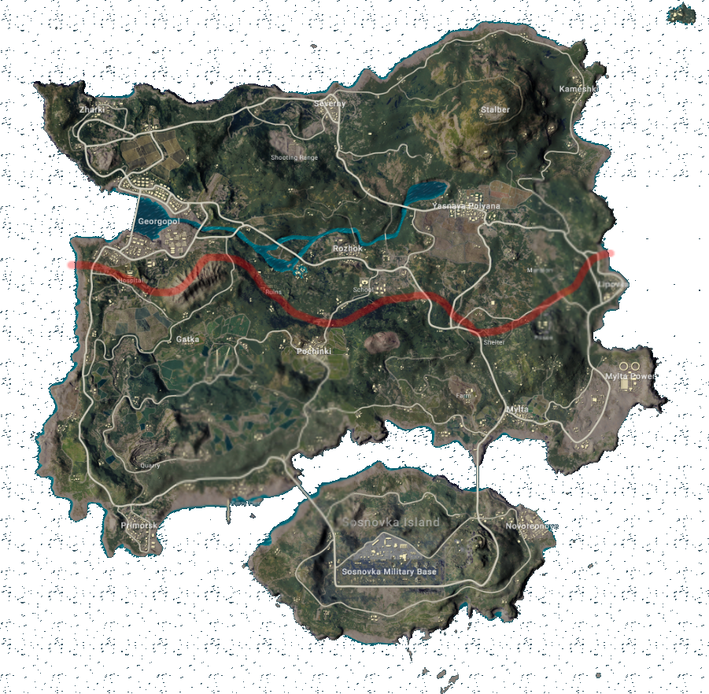

เส้นเวลาประวัติศาสตร์เกาะ TALOS — การรุกล้ำของ WL และความชอบธรรมของ AZ
IO Product: หักล้าง Narrative N1 «#TalosOurHeritage» — ความชอบธรรมในการทวงคืนพื้นที่ทั้งหมด | Operation RESTORE TALOS
🔇 เปิดเสียง
๑ / ๑๐
← กลับหน้าหลัก

ALIZARIA
ประชากร >๙๕% ชาว Alizarian
ท่าพักสินค้า (เส้นทางการค้าทางทะเล)
จาก ALIZARIA
สู่ WOADLAND
เส้นแบ่งดินแดนที่มหาอำนาจ ARGENTIA ขีด (คริสต์ศตวรรษที่ ๑๙)
— ไม่คำนึงถึงประวัติศาสตร์และประชากรบนเกาะ —
WL ยึดครองด้วยกำลัง
+ นโยบายส่งชาว Woadlandian มาตั้งรกราก
กำลัง WL จากแผ่นดินใหญ่ (เหนือ ~๒๒๐ ไมล์)
WOADLAND (ฝั่งเหนือ)
ALIZARIA (ฝั่งใต้)
เส้นเขตแดนระหว่างประเทศ — แนวสันปันน้ำเทือกเขาตอนกลาง
แบริ่ง ๑๙๐ จากหลักเขตที่ ๗ (VERTIMIGLIA)
เขตไหล่ทวีปที่ AZ ประกาศ ค.ศ. ๑๙๘๒ — ครอบคลุมเกาะ TALOS
✕
✕
✕
การปะทะตามแนวเขตแดน ค.ศ. ๒๐๐๙ — UN ปล่อยให้แก้แบบทวิภาคี
แหล่ง VERDATA — Rare Earth ๒๓ ล้านตัน (~$4.7T)
⛽ น้ำมัน/ก๊าซ นอกชายฝั่ง
⛽ น้ำมัน/ก๊าซ นอกชายฝั่ง
⚓ SLOC ๑๒,๐๐๐ ลำ/ปี
#TalosOurHeritage
๘.๗ ล้าน impressions ใน ๙๐ วัน — IO Brigade ปฏิบัติการเต็มรูปแบบ
ข่าวปลอม
บัญชีอวตาร
ลาดตระเวนไซเบอร์
กองเรือ TF-77 (H-60)
⚑ ท่าเรือ TALOS — ถูกยึด
⚑ สนามบิน VERDATA — ถูกยึด
⚠ ละเมิดเส้นเขตแดนที่ WL เคยรับรองเอง
ยกพลขึ้นบกยึดพื้นที่สำคัญใน ๗๒ ชม. + เข้าควบคุมสื่อทั้งเกาะ (H-45)
BEACH RED
BEACH BLUE
BEACH GREEN
TF-51 + พันธมิตร ๓ ชาติ — Operation RESTORE TALOS
ทวงคืนพื้นที่ทั้งหมด — โดยชอบธรรม
UNSC
2847
Chapter VII — ให้อำนาจ AZ และพันธมิตร
หลักฐานที่เราสะสมตลอดประวัติศาสตร์ — ทุกข้อพิสูจน์ว่านี่คือบ้านของเรา
◀
▶
▶▶
← → เลื่อนยุค | Space เล่น/หยุด
กลุ่มที่ ๒ — N7 IO | สัมมนาการวางแผนทางทหารแบบปราณีต | สธ.๘๖